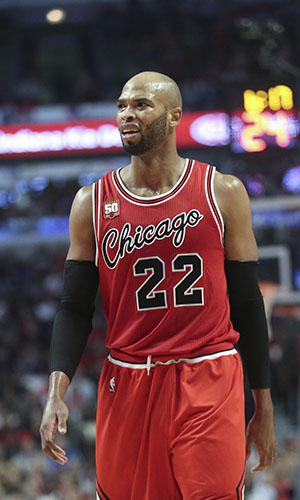

|  |
Матчи |
62 |
|
Передачи (всего/среднее) |
71 |
1.1 |
| В основе |
17 |
|
Подборы в защите (всего/среднее) |
34 |
3.8 |
| Время (всего/среднее) |
1691:52 |
27:17 |
Подборы в атаке (всего/среднее) |
163 |
2.6 |
| Очки (всего/среднее) |
642 |
10.4 |
Подборы (всего/среднее) |
397 |
6.4 |
| 2-очковые броски (всего/среднее) |
255/507 |
4.1/8.2 |
Перехваты (всего/среднее) |
36 |
0.6 |
| 2-очковые броски (% реализации) |
50.3% |
|
Потери (всего/среднее) |
77 |
1.2 |
| 3-очковые броски (всего/среднее) |
0/0 |
0/0 |
Блокшоты (всего/среднее) |
76 |
1.2 |
| 3-очковые броски (% реализации) |
0% |
|
Блокшоты соперника (всего/среднее) |
55 |
0.9 |
| Штрафные броски (всего/среднее) |
132/184 |
2.1/3 |
Фолы (всего/среднее) |
162 |
2.6 |
| Тадж Гибсон |
Штрафные броски (% реализации) |
71.7% |
|
Коэффициент полезности (всего/среднее) |
624 |
10.1 |